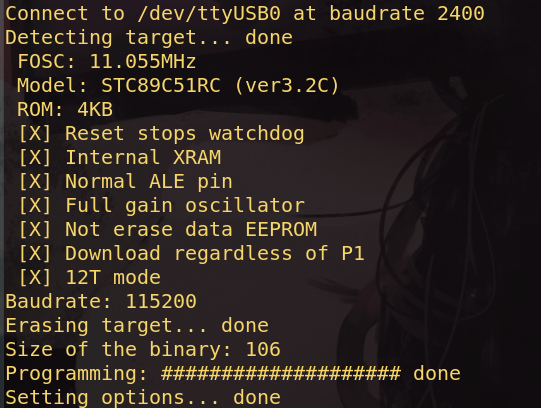
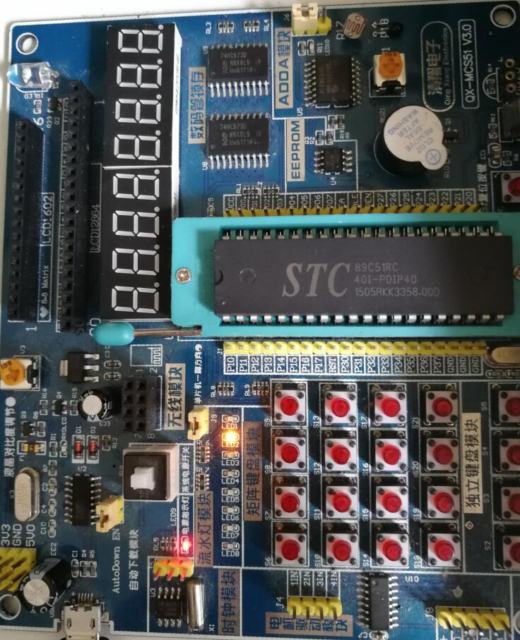

Ubuntu搭建51单片机开发环境
参考
工具安装
编辑器: 自由选择
编译器: sdcc
烧录工具: stcflash
sdcc 的下载:
sudo apt install sdccstcflash 的下载
得到 stcflash
方法一:
- 访问 GitHub 上的 stcflash 项目
- 下载压缩包
- 解压
方法二:(需要安装有 git)
git clone https://github.com/laborer/stcflash.git为了更方便的使用:
mv stcflash.py stcflash
sudo mv stcflash /usr/local/bin/添加依赖
sudo apt install python3-serial开始
我的环境
编辑器: vim
操作系统: Ubuntu 18.04
单片机: STC89C51RC
点亮 LED
- 编写 C 语言文件，我命名为 demo.c
#include <mcs51/8051.h>
#define LED P1_1
void main(void){
while(1){
LED = 0;
}
}- 编译文件
sdcc demo.c编译后生成很多文件，用于烧录的为.ihx后缀文件
- 烧录文件
sudo stcflash demo.ihx烧录结果：

实现效果

可能是环境原因导致的差异
其他博客说需要将.ihx文件转换为.hex文件，我测试的.ihx文件可以直接使用
packihx demo.ihx > demo.hex
## packuhx为sdcc自带其他博客说需要断电然后再启动，我测试的不需要断电，直接运行烧录命令
其他
我出现的问题，当时使用的是 STC89C52，使用 stcflash 命令后无法检测到目标，报错: IO error
原因：stcflash 不支持 STC89C52
个人感觉烧录不是很方便
comment:
- Valine
- LiveRe
- ChangYan